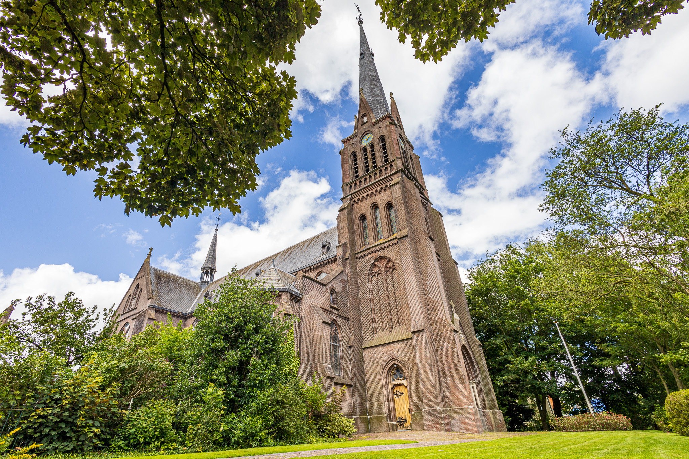
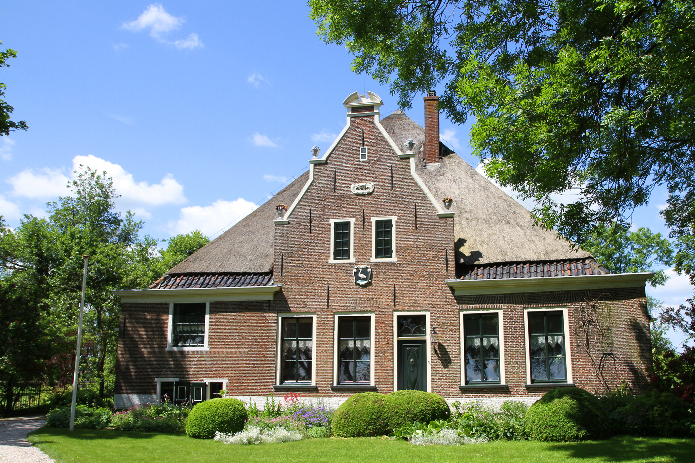
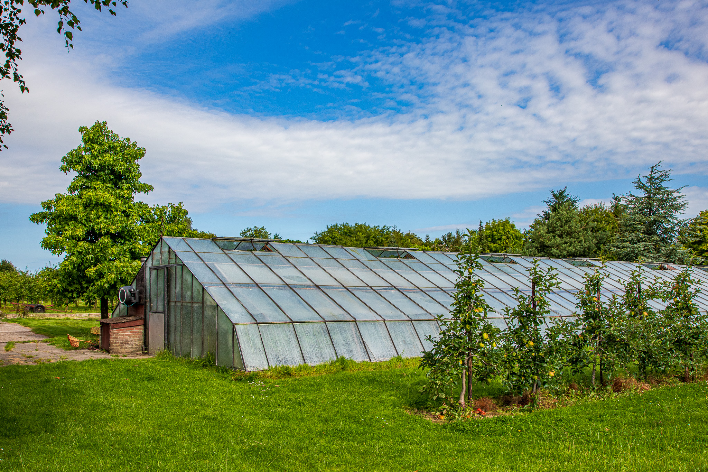
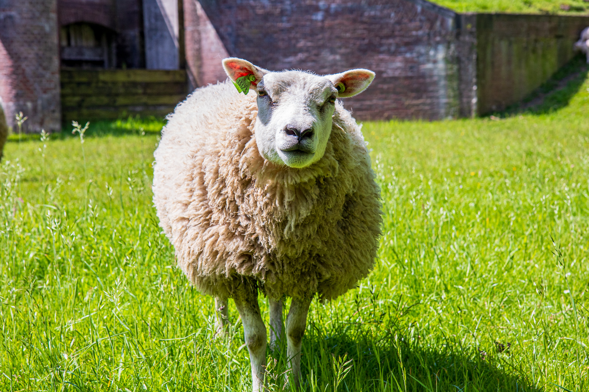

Al ruim 400 jaar worden verschillende soorten aardappels in de Beemster geteeld. ‘Beemster Valery’ is zo’n unieke aardappel en heeft een roze schil. De ‘Beemster Eerstelingen’ groeien net als de Valery’s in de Beemsterklei. Dat geeft ze hun karakteristieke smaak.
Kaas
Beemsterkaas van CONO Kaasmakers is ‘wereldberoemd’. De kaas wordt niet alleen in Nederland verkocht, maar gaat de hele wereld over! Zoek je boerenkaas uit de Beemster? Die verkoopt kaasboerderij Groot. Hun leuze: “Doe net als je grootje, boerenkaas op je broodje”
Kersen
Beemsterfruit wordt met zorg en liefde geteeld. Appels, peren, pruimen en kersen kun je in het seizoen op verschillende adressen kopen. Vaak vind je er ook lekkernijen, zoals sappen, jams en ingemaakte peren en kersen.
Knoflook
Knoflook in de Beemster? Nou en of! In de Beemsterklei groeien de knoflookbollen goed. Ken je de geur van knoflook? Als ze worden geoogst, ruik je het heel goed. De Beemster knoflookbollen en potjes knoflookpasta worden ook in het buitenland verkocht.
Hier komt het spel
Wil je meer weten of leren over Streekproducten? Wat leuk! Via onderstaande links kun je meer te
weten komen over dit onderwerp
Werelderfgoed
Dirck van Os
Deze 17e eeuwse Amsterdamse koopman was, samen met zijn broer Hendrick, de belangrijkste investeerder in het grote project om het Beemstermeer droog te maken. Nadat het meer was drooggelegd, werd hij eigenaar van 1/7 deel van het nieuwe land in de polder.
Kavelstructuur
Van 1607 tot 1612 is het Beemstermeer door 43 molens drooggemalen. In het nieuwe land werden rechte wegen en sloten aangelegd. Het land werd in stukken (kavels) verdeeld. Dit verkavelde landschap is een van de redenen waarom de Beemster werelderfgoed is geworden.
Kopergravure
Een kopergravure is een gegraveerde koperen plaat. Alle dingen moesten nauwkeurig en in spiegelbeeld in de plaat worden gegraveerd. In de 17e eeuw gebruikte men deze moeilijke techniek om bijvoorbeeld landkaarten zoals die van het nieuwe Beemster land af te drukken.
UNESCO logo
Alle werelderfgoederen in het Koninkrijk der Nederlanden krijgen een plaquette met het UNESCO logo en hun naam erop. Dan mag je jezelf werelderfgoed noemen en deze titel gebruiken. Sinds 4 december 1999 is Droogmakerij de Beemster een UNESCO Werelderfgoed.
In dit pand zat eerst een schooltje, toen een bibliotheek en gymzaal en daarna een brand-weerkazerne. In de slangentoren achter het gebouw werden de brandslangen gedroogd. Tegenwoordig is het een theater, met plaats voor zo’n 60 toeschouwers. Een mini-theater dus!
Westerhem
In het voorhuis van deze boerderij uit 1877 woonde de burgemeester en in de stolp de knecht met gezin. Nu is het voorhuis het Bezoekerscentrum Beemster. In de stolp is het museum waar je veel over de Beemster kunt leren.
Polderhuis
In dit grote statige huis uit 1850 woonde de hoofdopzichter van de Beemsterpolder. Hij kon vanaf het dakterras de poldermolens in de gaten houden. Naast het polderhuis was een huis voor personeel en een houten werkschuur.
De Nachtegaal
Deze korenmolen is een achtkante bovenkruier. De molen is enkele keren van plek veranderd en is in 2013 gerestaureerd. Onderdelen komen van oude Beemster windmolens. Je kunt de molen bezoeken en er ook zelfgemalen meelproducten kopen.
Hier komt het spel
Leer tekst van de modal
Historische Figuren
Betje Wolff
Betje is in 1738 geboren. Ze was getrouwd met dominee Wolff uit Middenbeemster. Op haar schrijfkamer ‘Kipperust’ schreef ze veel gedichten, brieven en boeken. De pastorie van toen is nu het Betje Wolff Museum waar je haar schrijfkamer kunt bezoeken.
Carel Fabritius
Carel Fabritius is in 1622 in Middenbeemster geboren. Deze bekende schilder is nog leerling bij Rembrandt geweest. Vlak voor zijn dood in 1654 schilderde hij zijn wereldberoemde werk, ‘Het Puttertje’. Dat schilderij kun je zien in het Mauritshuis in Den Haag.
J.A. Leeghwater
Leeghwater is in 1575 in De Rijp geboren. Hij controleerde de molens die het water uit het Beemstermeer pompten. En hij bedacht de molen met draaiende kap, zodat de wieken altijd op de wind konden worden gedraaid. Dat hielp enorm.
Wouter Sluis
Wouter Sluis is in 1827 geboren. Hij was boer en kaasmaker in de Beemster. Sluis hield van vernieuwing. Hij bedacht een betere manier om kaas te maken en voerde de grasmachine en hooischudder in. Ook ontdekte hij dat je brongas kon gebruiken om te koken en te verwarmen.
Hier komt het spel
Hier komen de teksten voor docenten
Waterbeheer
Jacob Bouman
Dit gemaal van het Hoogheemraadschap aan de Oostdijk uit 1962 pompt het water uit de Beemster weg naar water buiten de polder. Dat heet boezemwater. Daarna gaat het water naar het IJsselmeer en door de sluizen naar de Noordzee.
Wouter Sluis
Dit gemaal aan de Westdijk uit 1971 kan een half zwembad per minuut wegpompen! Dat gebeurt met twee grote elektrische pompen. Met een computer worden de pompen en het waterpeil gecontroleerd.
Molengang
Molens maalden het water uit de polder naar de Beemsterringvaart. Die lag vijf meter hoger. Een molen kan 1,5 meter omhoog malen. Daarom moesten molens trapsgewijs op verschillende hoogtes staan. Die molens op een rij noem je een molengang.
Beemsterringvaart
De Beemsterringvaart ontstond doordat daar grond is weggegraven. Met de grond werd de hoge Beemsterdijk van 42 kilometer gemaakt. Zo kon men het Beemstermeer leegpompen met 43 molens. Je kunt goed fietsen en wandelen over de dijk.
In 1618 begon de bouw van deze kerk in Middenbeemster. Het is het oudste gebouw van de Beemster. Het ontwerp is van Hendrick de Keyser, de torenspits van Pieter Post. Je kunt met de trap helemaal naar de torentrans klimmen.

Joannes De Doper
Deze kerk in Westbeemster is van 1878. De kerk kon gebouwd worden na 1848. Toen was het katholieke geloof niet meer verboden. Kijk eens hoe groot de kerk is. In het grote klooster woonden eerst nonnen. Nu kun je er wonen.
NH Kapel
Deze kleine Nederlands Hervormde Kapel in Zuidoostbeemster uit 1951 heet nu Z-INN Kapel. Hier worden kerkdiensten gehouden en het is ook een repetitieruimte voor muzikanten en koren. Soms draait er een film. Kijk eens hoe licht de ruimte binnen in de kapel is.
Doopsgezinde Vermaning
Dit gebouw uit 1789 aan de Middenweg lijkt op een schuur, maar is een kerk. Doopsgezinde mensen moesten vroeger voor hun geloof naar geheime kerken zoals hier. Nu heet het de Beemster Vertoeving waar culturele activiteiten en evenementen plaatsvinden.
Hier komt het spel
Hier komen de teksten voor docenten
Boerderijen
Eenhoorn
Deze monumentale stolpboerderij uit 1682 is een van de mooiste in de Beemster en Nederland. De burgemeester van Hoorn gaf opdracht om deze boerderij te bouwen. De eenhoorn, het symbool van de stad Hoorn, siert daarom de gevel.

Lepelaar
De burgemeester van Jisp liet deze stolpboerderij bouwen op de plek van een vorige boerderij. De lepelaar, gemeentewapen van Jisp, zie je op een van de twee gevelstenen. Op de andere steen staat ‘1683’, het bouwjaar van de boerderij.
Broedersbouw
Deze herenboerderij uit 1742 is een van de grootste in de Beemster. Het was voor die tijd een moderne stolp. De laatste boer vertrok in 2015. De boerderij is daarna verbouwd. Het is nu een wooncomplex met negen appartementen.
Boschrijk
Een graanhandelaar uit De Rijp liet in 1875 deze boerenhofstede bouwen. Bijzonder was de Zuid-Hollandse stal waar koeien met hun kop naar het midden stonden, naar de voergang. In andere stallen stonden koeien met hun kop naar de buitenmuur.
Midden in de polder ontstond het oudste dorp. Aan het marktplein stonden belangrijke gebouwen, zoals De Keyserkerk uit 1618, de smederij en herberg Het Heerenhuis. Die oude hekken op het plein? Vroeger stond daar het vee tijdens de markt aan vastgebonden.
Noordbeemster
Het kleinste dorp van de Beemster waar huizen en mooie boerderijen als een lint langs de weg staan. Het oudste gebouw is boerderij ‘Tijd verblijf’ uit 1667. Het restaurant was voorheen een school en later een winkel en komt uit 1725.
Westbeemster
De inwoners waren rooms-katholiek. Een eigen kerk mocht niet, daarom ging men naar een schuilkerk. Na de Grondwet van 1848 kwam er vrijheid van godsdienst en werd de rooms-katholieke kerk gebouwd. Later kwam er een klooster en school bij.

Zuidoostbeemster
Dit dorp, ook ‘Tuinhoek’ genoemd, omdat hier veel tuinderijen waren. Je ziet hier nog fruitbomen en oude kassen staan. Oude veeboeren kochten hier een huis, dichtbij de veemarkt in Purmerend waar ze vroeger kwamen. Die buurt werd de ‘Chagrijnenbuurt’ genoemd.
Hier komt het spel
Hollandse Waterlinies
Fort benoorden Purmerend
In dit fort bij de Oostdijk van de Beemster lag munitie opgeslagen. Na de oorlog in 1945 zaten er
tijdelijk gevangenen. Sinds 1983 is het een ‘Wijnfort’. Door de dikke muren is het er altijd koel.
Perfect om flessen wijn te bewaren.
Fort Nekkerweg
Fort Nekkerweg is één van de vijf forten in de Beemster. Ze horen bij het werelderfgoed Hollandse
Waterlinies. Het ligt ook nog in werelderfgoed Droogmakerij de Beemster! Je kunt hier lekker eten,
slapen en ontspannen. Bekijk de dikke muren eens.
Fort Spijkerboor
Dit fort ligt lager dan de Westdijk van de Beemster. Daarom heeft het fort twee verdiepingen. Zo
konden de militairen toch ver kijken. Bovenop zie je een draaibaar pantserkoepel. Met de twee
kanonnen konden ze wel 10 km ver schieten.
Inudatiesluis
Als de dikke deuren van de sluis werden opengezet, stroomde het water uit de ringvaart een deel van
de polder in. Dat kwam dan ongeveer 50 cm onder water te staan. Dat noemen ze inunderen. Het was
bedoeld als verdediging tegen de vijand.
Hier komt het spel
Bijzondere Tuinen
Arboretum
Arboretum is het laagstgelegen bomenmuseum ter wereld! Je vindt hier wel 2.600 soorten bomen en
struiken. Sommige zijn een paar honderd jaar oud. Je kunt hier veel zien en leren over bomen en
struiken of heerlijk rondwandelen.
POM Boomgaard
In deze boomgaard staan wel 250 oude hoogstam fruitbomen, zoals appel- en perenbomen, die vroeger in
de Beemster voorkwamen. Pomologie is de leer van fruitsoorten. Vrijwilligers verzorgen en snoeien
deze bomen waardoor de oude fruitrassen behouden blijven.
Wereldtuin
In Westbeemster werken vrouwen uit diverse landen samen. Ze onderhouden de tuin en verbouwen
groenten en bloemen. Je kunt wandelen in de tuin, picknicken, van de natuur genieten en kunst
bekijken. Je mag er ook bloemen plukken.
De Proeftuin
In deze Beemster boomgaard aan de Oostdijk groeien appels, peren, pruimen, bessen en kersen. In deze
proeftuin werd vroeger onderzoek gedaan naar ontwikkelingen in de fruitteelt. Dat onderzoek stopte.
Nu kun je op zaterdag in de boerderijwinkel boodschappen doen.
Hier komt het spel
Dieren
Geit
Vroeger werden in de Beemster geiten gehouden als grazer en voor hun vlees en huiden. Tegenwoordig worden ze gehouden voor hun melk. Ze geven gemiddeld 3 liter melk per dag. Voor mensen die allergisch zijn voor koemelk is geitenmelk een vervanger.
Koe
In de lente en zomer zie je veel koeien grazen in de Beemsterweiden. De koemelk, gemiddeld 27 liter per dag per koe, gaat vaak naar de kaasmakers in de Beemster. Er worden ook koeien gehouden voor de productie van vlees.
Paard
Bij veel boerderijen in de Beemster zie je paarden lopen. Vroeger werden deze dieren ingezet voor het trekken van een schuit of een koets en bij het ploegen en maaien van het land. Tegenwoordig worden paarden gebruikt voor rijplezier en sport.

Schaap
Schapen worden gehouden voor melk, vlees en wol. De schapen op de Beemsterringdijk en in de wei zijn belangrijk. Ze trappen de grond vast en zijn goede grazers. Ze eten veel planten en voorkomen zo wildgroei van struiken en bomen.
Hier komt het spel
Beemster Kleuren
Rood
Nu zien we meestal zwartbonte koeien. Toen de Beemster was drooggelegd hadden de koeien meer kleuren. Rood, bruin, roodbont, blauwbont, blaarkop en meer.
Op schilderijen uit die tijd zie je vaak rode of roodbonte koeien.
Groen
Het nieuwe land was niet droog genoeg. Het kon nog niet als bouwland gebruikt worden.
De grond was te slap en goederenvervoer met paard en wagen was moeilijk. Maar koeien op het frisse groene grasland, dat ging heel goed.
Geel
In de eerste jaren na de drooglegging waren er veel problemen te overwinnen.
Toch ging het steeds beter. Na de veeteelt werd ook de akkerbouw mogelijk. Zo kan het geel de zon betekenen, maar ook de graanteelt.
Blauw
Blauw zou het Beemstermeer kunnen betekenen of misschien wel de vele sloten en de Beemster-ringvaart.
In 1962 kreeg de gemeente Beemster een vlag: rood, groen, geel en blauw. De Beemster bestond toen 350 jaar.
Hier komt het spel
Wegen en Dijken
Middenweg
Dit is de middelste weg van de vijf wegen in de Beemster die van noord naar zuid lopen. Vanaf de dijk bij Avenhorn tot aan de Zuiddijk. De weg loopt niet lijnrecht, maar maakt een lichte knik in het noorden van de Beemster.
Volgerweg
De Volgerweg loopt van de Oostdijk tot de Westdijk en is genoemd naar het buurtje Volger dat aan de overkant van de ringvaart lag. In 1640 stonden in de Beemster meer dan vijftig buitenplaatsen of statige herenhuizen. De meeste van deze huizen stonden aan deze weg.
Westdijk
In het westen grenst de Beemsterringdijk aan Schermerhorn en De Rijp. Als je op de Westdijk loopt, kun je goed het verschil zien tussen het oude en het nieuwe land. Het onregelmatige veenlandschap van de Eilandspolder en de strakke indeling van de Beemster.
Zuiddijk
De Zuiddijk ligt aan het Noordhollandsch Kanaal dat van Amsterdam naar Den Helder loopt. Hier meerden schepen aan om de forten Middenweg en Jisperweg te bevoorraden, twee van de vijf Beemsterforten van de Hollandse Waterlinies.